SolidWorks Simulation of a Clothes Hanger
The Project
The static analysis of a plastic clothes hanger under the loading of a jacket. We chose to do a plastic hanger because they frequently break.
Prediction
Predicted that the maximum stress will occur at the sharp intersections of the hook and the body because sharp corners are stress concentrations.
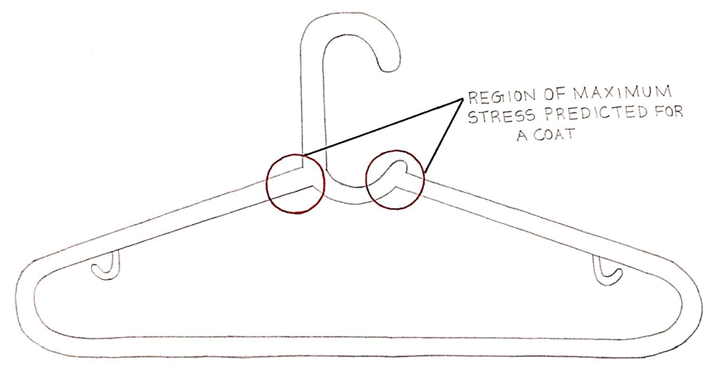
Solid Model
We defeatured the small hooks because we concluded that their impact is negligible when a hanger is under the loading of a jacket.
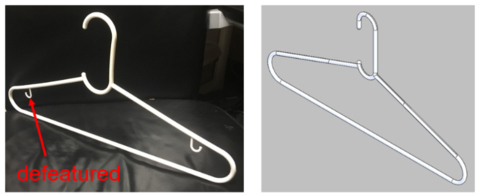
Initial Boundary Conditions
Initially, we thought that the hanger would experience equal load on both shoulders, with a reaction force at the tangent point where the hanger hook meets the clothes rack.
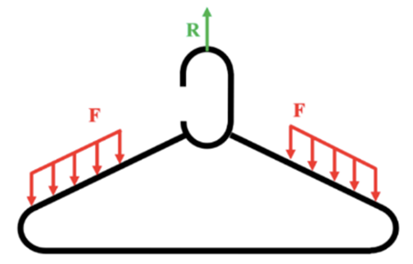
Experiment
In order to verify our finite element analysis, we conducted experiments by placing a jacket with weights stuffed in the pockets, and increasing the weights until the hanger broke.
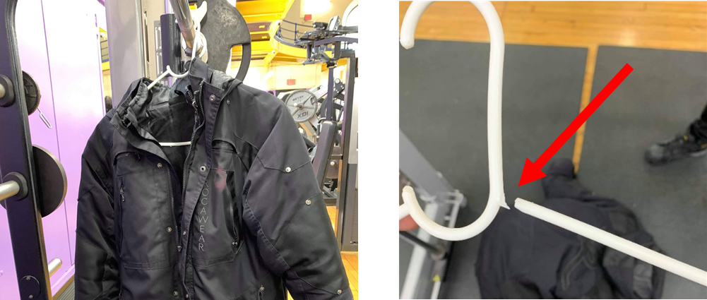
Initial Simulation
Using the initial boundary conditions, the result of the FEA was as shown below.
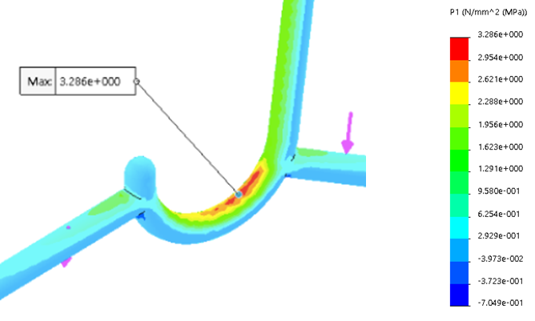
Experiment vs Simulation
After comparing the simulation results to the experimental results, we noticed that the location of fracture as observed experimentally did not match the location of maximum stress observed by simulation.
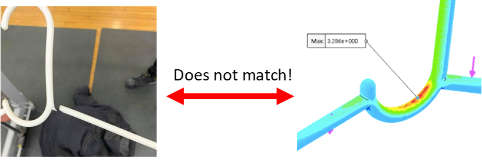
Revisited Boundary Conditions
Since the simulation and experiment did not agree, we revisited the boundary conditions and noticed that as humans, we tend to hang jackets unevenly on a hanger in order to balance the hanger which has a naturally uneven shape with its opening on the hook.
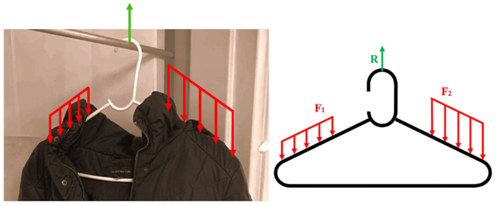
Revised Simulation
The simulation was re-ran with an uneven loading on the two shoulders of the hanger.

Experiment vs Simulation, Again
The simulation results were compared to the experiment result. This time, the location of maximum stress determined in the FEA corresponded to the location of fracture in the experiment.
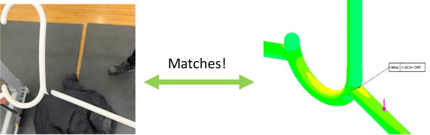
Result Validation
Our simulation results then had to be validated using the table below.
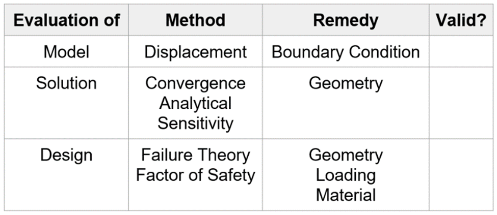
Model Validation
The model was first validated by comparing the FEA displacement to the experiment displacement.
Displacement of real-life and FEA match, validating the model.
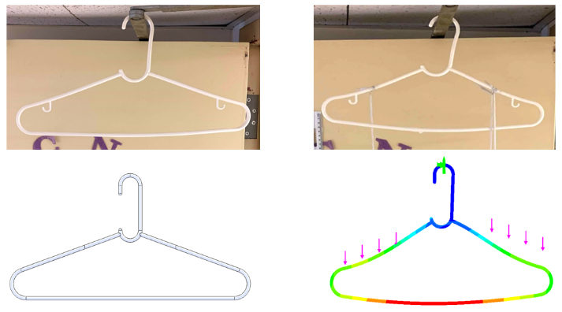
Solution Validation
Divergence when decreasing element size at stress concentrations.
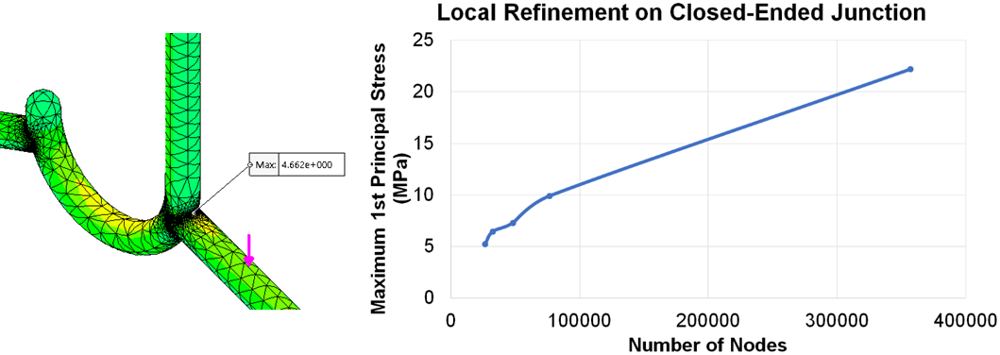
Therefore, the solution is invalid. Any adjustments hereon will not be strongly reflective of the real-life scenario.
Geometry Adjustment
We added fillets to the location of stress singularities.
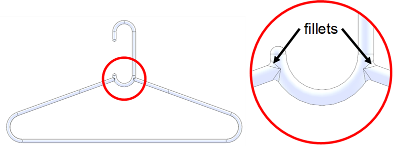
Solution Validation Again
This time, the solution was validated by the convergence test.
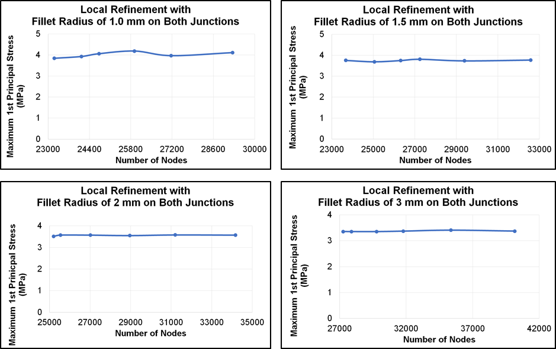
Additionally, the solution was also validated by the sensitivity test.
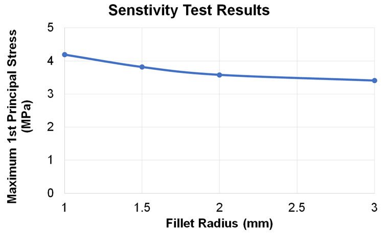
Design Validation
To validate our design, we looked at the properties of our hanger.
The maximum stress fracture theory states that the maximum principal stress must be greater than the fracture strength, or 35 MPa for polystyrene.
Since SolidWorks is a linear solver, used the result of our experiment and scaled the SolidWorks result accordingly by adjusting the fillet size of the FEA until the fracture strength was obtained.
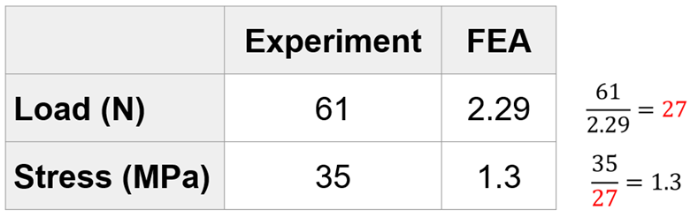
According to the sensitivity test, however, the fillet radius must be unrealistically large for the stress to reach the fracture strength.
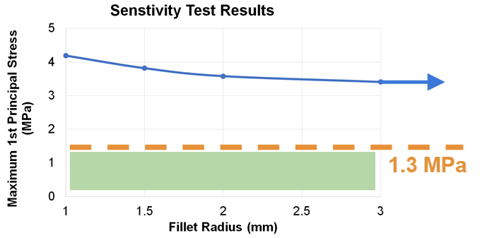
Therefore, we concluded that our results are difficult to validate.
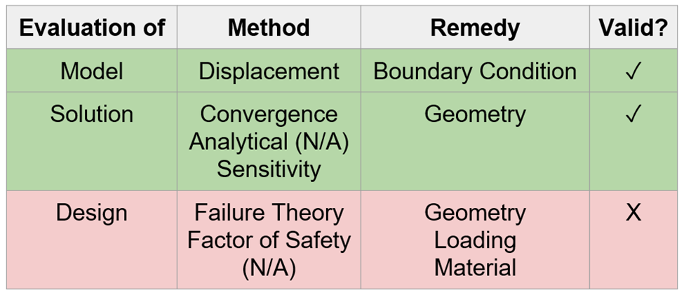
Design Implication
We were still able to make design conclusions using FEA as the model and solution were validated.
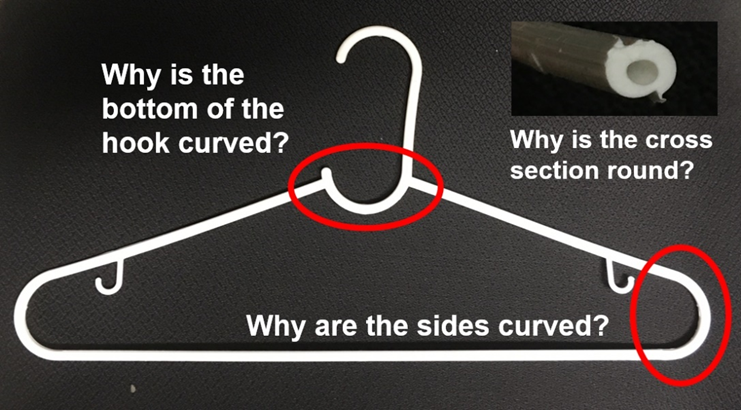
Why is the bottom of the hook curved?
We ran an FEA on the hanger without a hook and found that the stress is higher without the hook. Therefore, the hook may be curved at the bottom to reduce the stress.
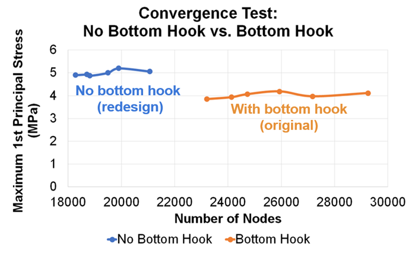
Why is the cross-section round?
We ran an FEA on the hanger with a square cross-section and noticed that the stress is actually lower with a square-cross section. Therefore, stress cannot be the reason why the cross-section is round. Maybe a circular profile is easier to remove out of the injection mold case?
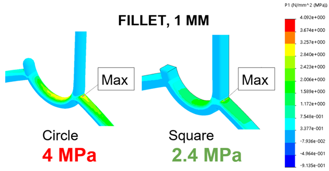
Why are the sides curved?
From our FEA studies, we learned that sharp corners lead to high stresses. Therefore, sharp corners should be avoided.
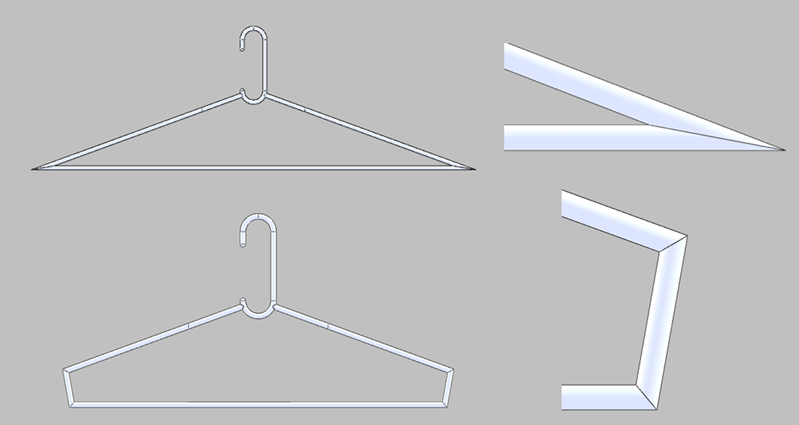
Conclusion
Experiments have shown that the hanger can withstand up to 6.1 kg, or about 3 really heavy jackets, before the hanger breaks. This is more than enough for a cheap hanger to hold!